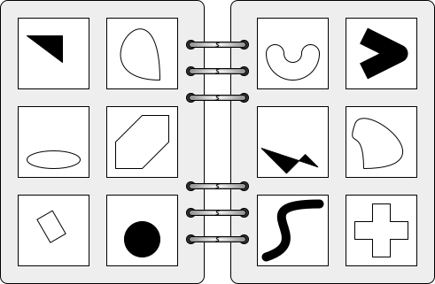

(from kakoi - introduction)

Image created by Wikipedia User:Cmglee, licensed under CC-BY-SA (image shrunk to fit on this page).
The shapes on the left-hand-side are convex, while the shapes on the other side are concave. In other words, one side holds shapes that curve outwards, while the second side holds shapes that at some point curve inwards.